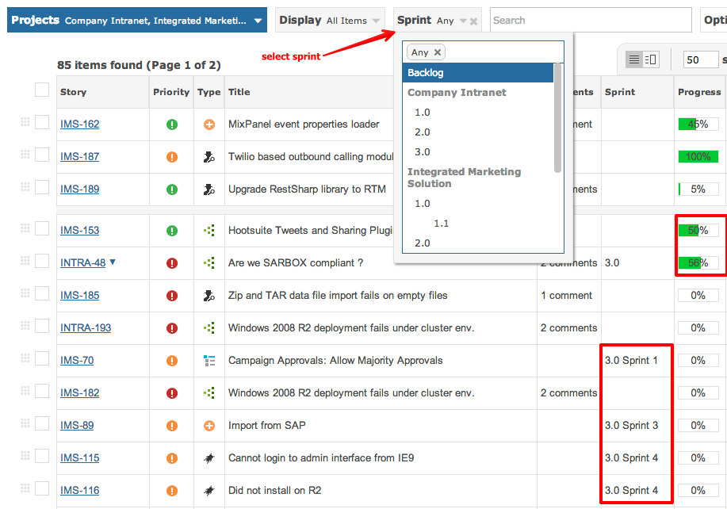
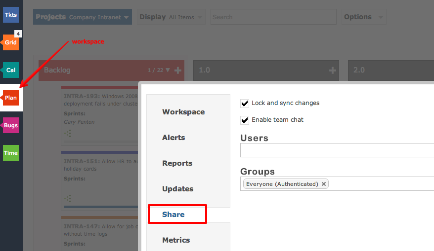
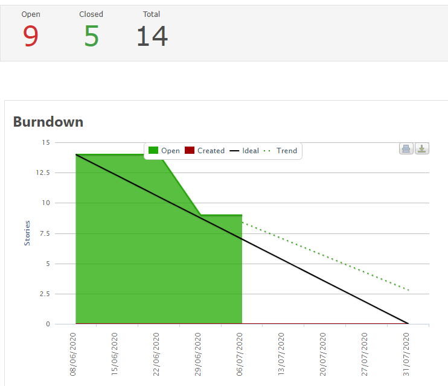
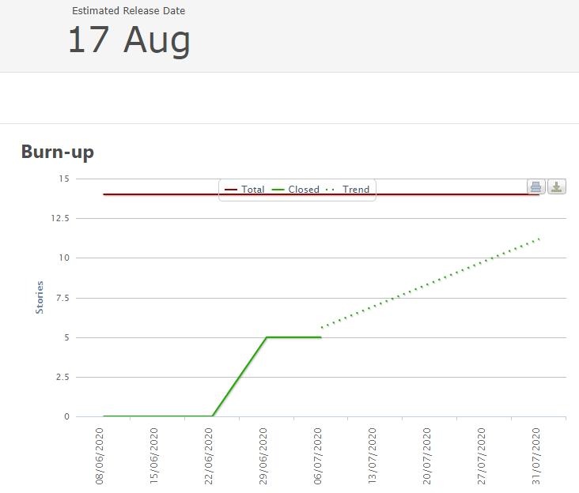

Agile and Scrum working usually means running a Daily Scrum to answer three key questions:
The grid can be used to filter and view items for any Sprint and/or Backlog.

You can share workspaces that define your view of the world with co-workers, so they see what you see.

The Burndown chart tracks how many items remain open as you approach the delivery date for the sprint. The timeline is represented along the X axis.

The objective is to have no open items as you hit the delivery date.
The solid black line represents the ideal line that shows the target you should hit at various time intervals.
The Burnup chart tracks how many items are closed as you approach the delivery date for the sprint.
